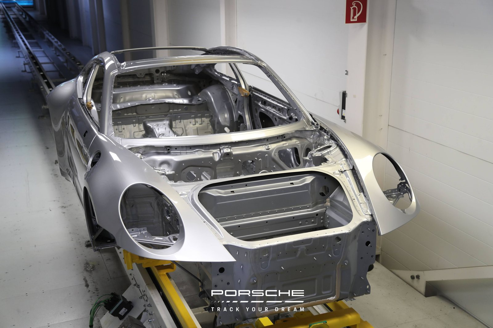
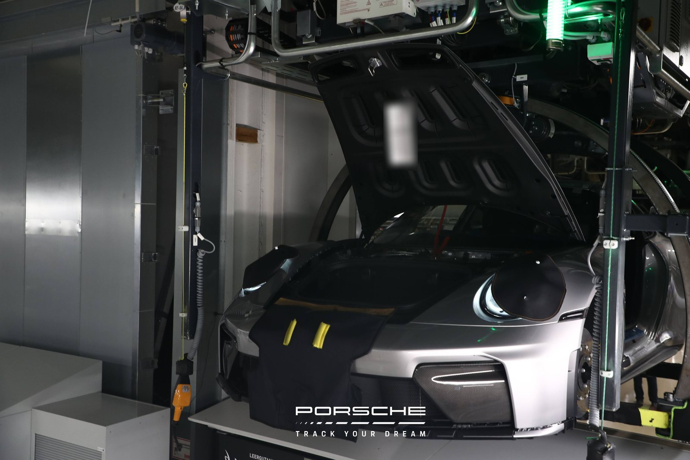
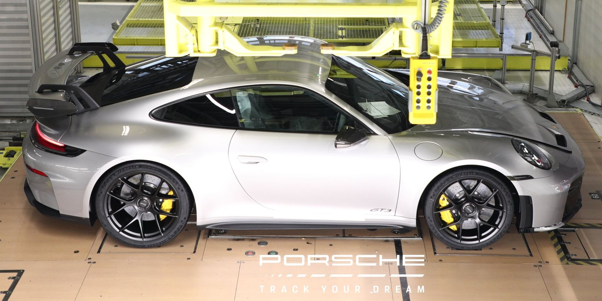
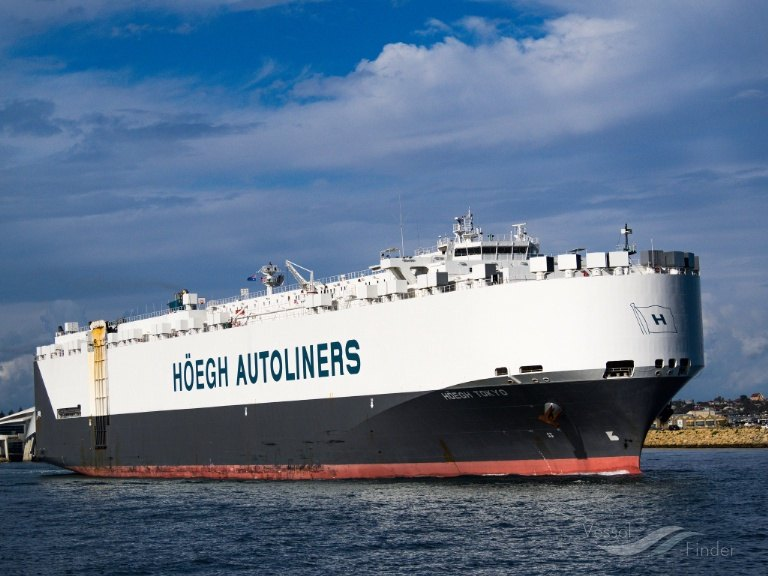
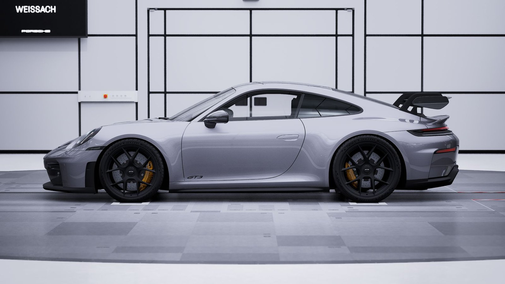
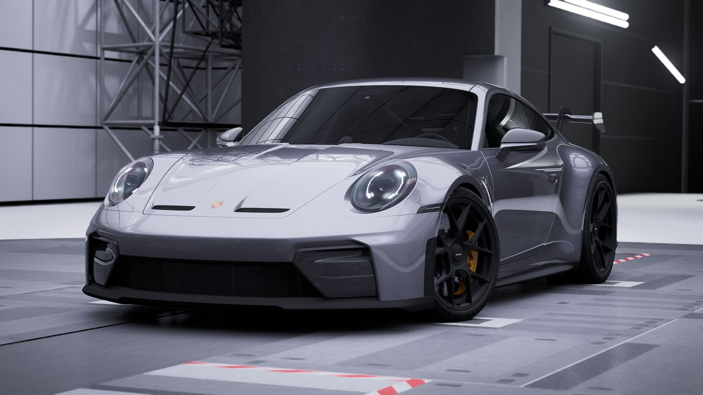
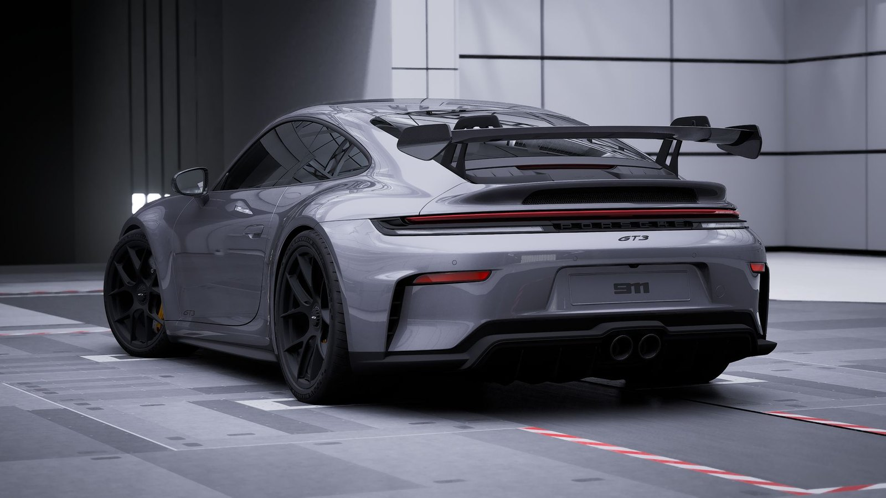
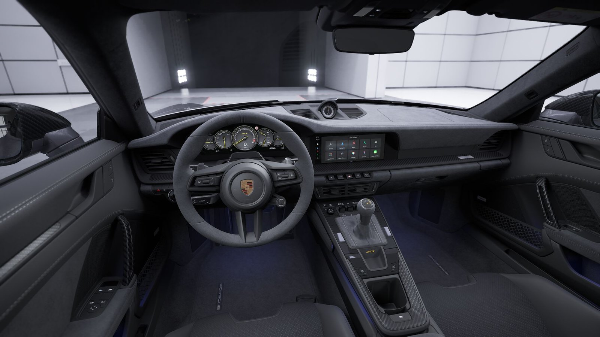
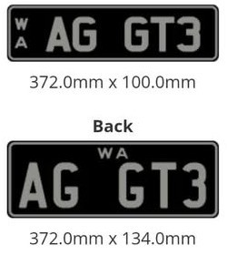

From the production line



Status
Höegh Tokyo is under way in the North Sea with the GT3 on board, heading for Gothenburg, then Fremantle on 13 Jan 2027, and on to Sausageworx Garage, Burswood after discharge.
Remaining distance is an estimate along VesselFinder's predicted path to Gothenburg and a plausible ocean route from there to Fremantle. Ports of call after Gothenburg are not confirmed. The last dashed hop after Fremantle is the short run to Burswood.
Voyage map
The solid line is the AIS track since leaving Bremerhaven. The first dashed line is VesselFinder's predicted path to Gothenburg. The second dashed line is an expected onward route via the English Channel, West Africa and the Cape of Good Hope, then a short hop from Fremantle to Sausageworx Garage in Burswood; it is not confirmed past Gothenburg. The silver 911 marks the current position of the GT3 on Höegh Tokyo. The oil-can marks someone waiting in Perth, and the workshop badge marks Sausageworx Garage, Burswood. Click a marker or a port for details.
Port calls and timeline
| Milestone | When (AWST) | Notes |
|---|---|---|
| Antwerp departure | 24 Nov 2026, 10:51am | Ship's previous port. The car was not yet loaded. |
| Bremerhaven arrival | 25 Nov 2026, 12:07pm | Ship arrived before the car was received. |
| Car received and loaded | 25 Nov 2026 | Höegh cargo record, Bremerhaven. |
| Left the port of shipment | 25 Nov 2026 | Porsche Track Your Dream, milestone 6 of 8. |
| Bremerhaven departure | 26 Nov 2026, 11:51pm | Official ATD. The GT3 is on board. |
| Turned north | 27 Nov 2026, 6:20pm | Left the Zeebrugge approach. AIS destination changed to Gothenburg. |
| AIS position | 27 Nov 2026, 6:49pm | |
| Gothenburg ETA | 29 Nov 2026, 2:30am | Confirmed AIS destination. Not yet arrived. |
| English Channel, West Africa, Cape of Good Hope | Unconfirmed | Expected ocean legs only. No further ports of call are confirmed. |
| Fremantle ETA | 13 Jan 2027 | Höegh cargo record. Date only; no time of day is given. |
| Sausageworx Garage, Burswood | After discharge | Final destination after the ship arrives at Fremantle. |
The ship

Shipping record
| VIN | XXXXXXX |
|---|---|
| Plates | AG GT3, black aluminium with silver characters, ordered through PlatesWA |
| Received and loaded | 25 Nov 2026, Bremerhaven |
| Porsche milestone | 6 of 8, left the port of shipment, 25 Nov 2026 |
| Discharge | Fremantle, 13 Jan 2027 |
| Final destination | Sausageworx Garage, Burswood |
The car




| Model | 2027 911 GT3 |
|---|---|
| Colour | GT Silver Metallic |
| Transmission | 7-speed Porsche Doppelkupplung (PDK) |
| Package | Weissach package without roll cage, plus Club Sport package |
| Interior | Extensive leather / Race-Tex in Black, contrasting GT Silver |
| Seats | Lightweight Sport bucket seats, foldable, with seat heating |
| Wheels | 20-/21-inch 911 GT3 forged magnesium lightweight wheels, black satin-gloss |
| VIN | XXXXXXX |
| Plates | AG GT3, black aluminium with silver characters, ordered through PlatesWA |

The AG GT3 plates as ordered from PlatesWA: front 372 x 100 mm, back 372 x 134 mm, aluminium.
Specification
Options below are from the 23 Aug 2026 specification. Dollar figures on this public page are masked.
| Option | Code | Price |
|---|---|---|
| GT Silver Metallic | U2 | Included |
| 20-/21-inch 911 GT3 forged magnesium lightweight wheels | F37 | $XXXXXXX |
| Wheels painted in Black (satin-gloss) | 1NX | $XXXXXXX |
| Interior, extensive leather / Race-Tex Black with contrasting GT Silver | 43 | $XXXXXXX |
| Lightweight Sport bucket seats (foldable) | Q1S | $XXXXXXX |
| Seat heating (front) | 4A3 | Included |
| Weissach package without roll cage | 04I | $XXXXXXX |
| Club Sport package | 95L | Included |
| Front lid, roof and rear wing in exterior colour | 5M7 | Included |
| Privacy glass | VW7 | $XXXXXXX |
| Model logo on storage compartment lid, Race-Tex | AJ1 | $XXXXXXX |
| Door sill guards in Carbon matt, illuminated | 7M8 | $XXXXXXX |
| 7-speed Porsche Doppelkupplung (PDK) | G1C | Standard |
| Lifting system, front axle | 2UH | Standard |
| Chrono Package | 8LH | $XXXXXXX |
| Porsche Ceramic Composite Brake (PCCB), calipers painted in Yellow | 1LQ | $XXXXXXX |
| BOSE Surround Sound System | 9VL | $XXXXXXX |
| Price for equipment | $XXXXXXX |
Power and performance
| Engine | 4.0-litre naturally aspirated flat-six |
|---|---|
| Displacement | 3,996 cm³ |
| Power | 375 kW / 510 PS |
| Torque | 450 Nm |
| Maximum revs | 9,000 rpm |
| 0–100 km/h | 3.4 s |
| Top speed | 311 km/h |
Dimensions
| Length | 4,570 mm |
|---|---|
| Width, mirrors out | 2,033 mm |
| Width, mirrors folded | 1,834 mm |
| Height | 1,279 mm |
| Wheelbase | 2,457 mm |
| Fuel tank | 63 l |
| Front luggage | 135 l |
Sources
Ship photograph by Andrew Priest, via VesselFinder ship photos. Land outlines from Natural Earth 110m. Positions from VesselFinder AIS.